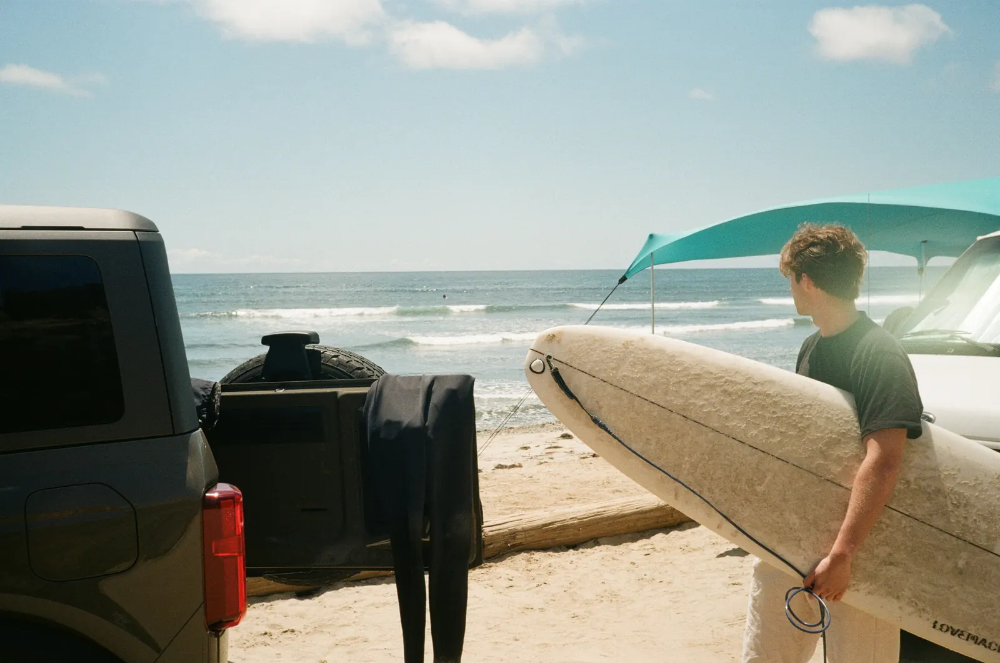
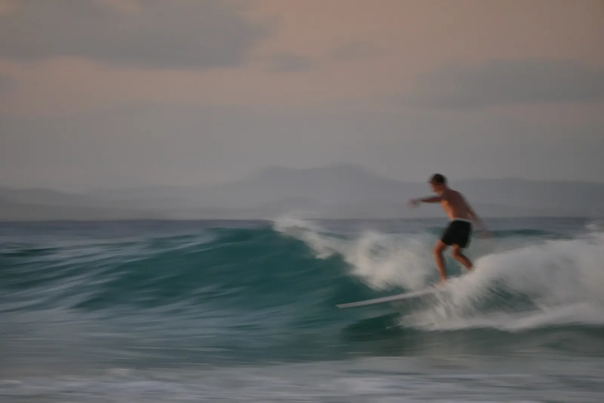

Every ride, measured.
Join the waitlist →Meet
RIPPLsense.
The tiny motion capture sensor for surfing.
Snap in
and go.
The RIPPL mount fixes to your tail, then RIPPLsense snaps in, ready to paddle out.
One sensor.
Every board.
Precise motion capture on every wave, every turn, every paddle.
Every ride
is motion.
RIPPLsense records how your board moves through every wave: each tilt of the rail, each lift of the nose.
We turn it
into a model.
RIPPL rebuilds the ride in 3D, you and your board, and learns what your technique looks like.
Your surfing,
decoded.
RIPPLiQ compares your personal model with surfers worldwide. See how the pros approach a wave, and the one change to your technique that takes you to the next level.


local leaderboard · cumulative RIPPLscore

waitlist · open now
The first surfers in get early access to RIPPLsense and the app, and a direct line to the team building it.
Everything surfers ask us before they join the lineup. Missing one? Ask us on Instagram.
Snap RIPPLsense onto your tail and surf — no phone in the water. It records every movement of your board, then syncs to the RIPPL app once you're back on the sand, where every wave is broken down and scored.
Wear a paired watch and you'll get feedback live, the moment you kick out.
RIPPL gives you your own personal AI coach — one that learns how you surf. It uses your ride data to show exactly what to work on, wave by wave: open your shoulders earlier on the bottom turn, for example. It builds training plans that adapt to you and your break, and shows how every session compares with your last.
With a watch on, you can adjust before the next wave, not next session.
Yes. Every ride on RIPPL makes the whole platform smarter, so you can see how you stack up against riders at your level, your local lineup and the pros — and what separates your surfing from theirs.
That's where we're heading. RIPPL will connect you with surf coaches, and with communities where you can ride together, set goals and push each other to hit them.
Yes — RIPPL is for every level. We're building AI models that meet you where you are, whether you're just starting out or the biggest ripper at D-Bah. Wherever your surfing's at, we're building RIPPL for you.
RIPPLsense fits any board — shortboard, longboard or softtop. Stick a mount on each of your boards; the sensor snaps in and out in seconds, so you can change boards mid-session and get straight back in the lineup.
Multiple sessions on a single charge — days of surfing between charges. Charge it, attach it before you paddle out, then forget about it.
The motion of every ride. RIPPLsense sits on your board and captures how it moves through every wave, every turn and every paddle out. That motion tells us how you really surf — so RIPPL can read your technique and show you exactly what to change to get better.
You also get the numbers that matter: waves ridden, wave height, turn power and paddle efficiency. Stack them up against your last session, or against your friends.
A watch sits on your wrist, so it mostly knows where you went. RIPPLsense sits on the board — the thing you're actually steering — so it reads how you rode each wave, not just that you caught it.
Both. RIPPL works at any break — beach, reef or point — and in wave pools too.
We're starting our tester program soon. Join the waitlist to find out first.
Join the waitlist for early access to RIPPL.
We will soon be hand-picking our test riders from the waitlist to get even earlier access, helping us build RIPPL pre-release alongside our pro team.
Keep an eye out for comms on that soon!